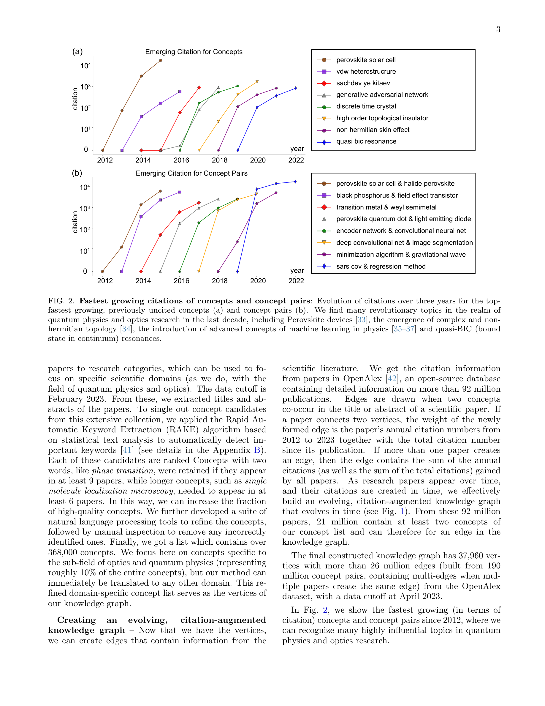
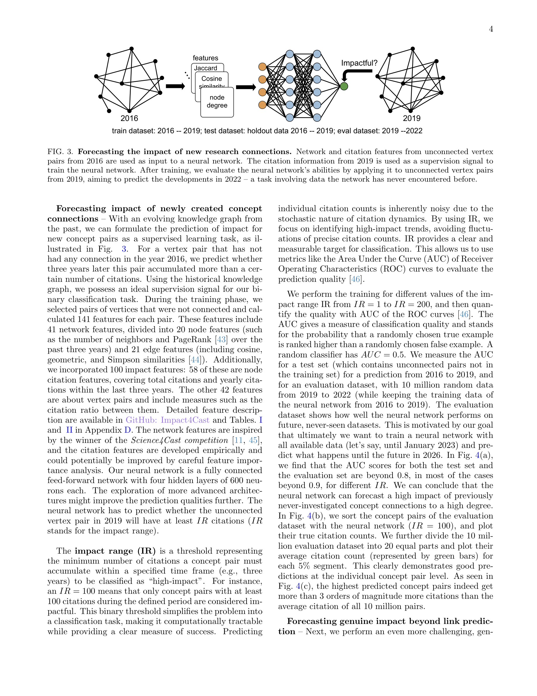
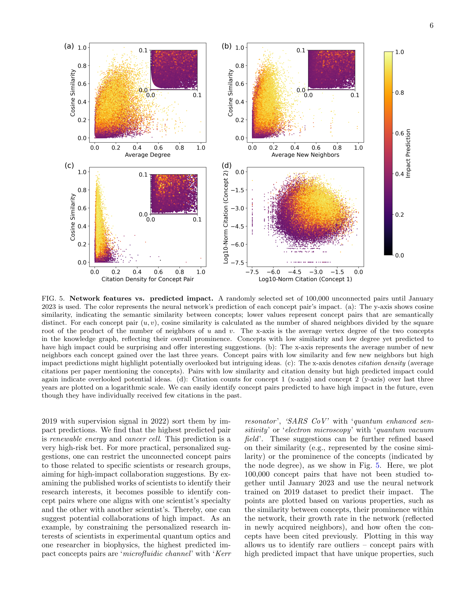

Figure 1
저자: Xuemei Gu, Mario Krenn | 날짜: 2025-06-30 | Journal: Machine Learning: Science and Technology | DOI: 10.1088/2632-2153/add6ef
Figure 1
아직 출판되지 않은 새로운 연구 아이디어의 영향력을 미리 예측할 수 있는가? 2,100만 편의 논문으로 구축한 진화하는 지식 그래프(의미 네트워크 + 인용 네트워크)에 머신러닝을 적용한 결과, 지금까지 한 번도 함께 연구되지 않은 개념 쌍이 미래에 높은 인용을 받을지를 AUC 0.9 이상의 정확도로 예측할 수 있었다. 이는 연구가 완료되기 전, 아이디어 단계에서 영향력을 예측하는 최초의 대규모 시연이다.

Figure 2
Krenn et al.(2023, Nature Machine Intelligence)이 AI 분야에서 미래 연구 방향(어떤 개념이 함께 연구될 것인지)을 예측했으나, 그 중 어떤 것이 영향력 있을지는 예측하지 못했다. 진정한 과학적 AI 어시스턴트는 아이디어가 탄생하는 가장 초기 단계에서 영향력을 평가할 수 있어야 한다. 이를 위해 의미 네트워크와 인용 네트워크를 결합한 "지식 그래프"가 필요했다.

Figure 3

Figure 4

Figure 5
총평: 아이디어 단계에서 연구 영향력을 예측하는 혁신적 접근으로, 과학적 발견을 지원하는 AI의 가능성을 한 단계 끌어올린 연구다.